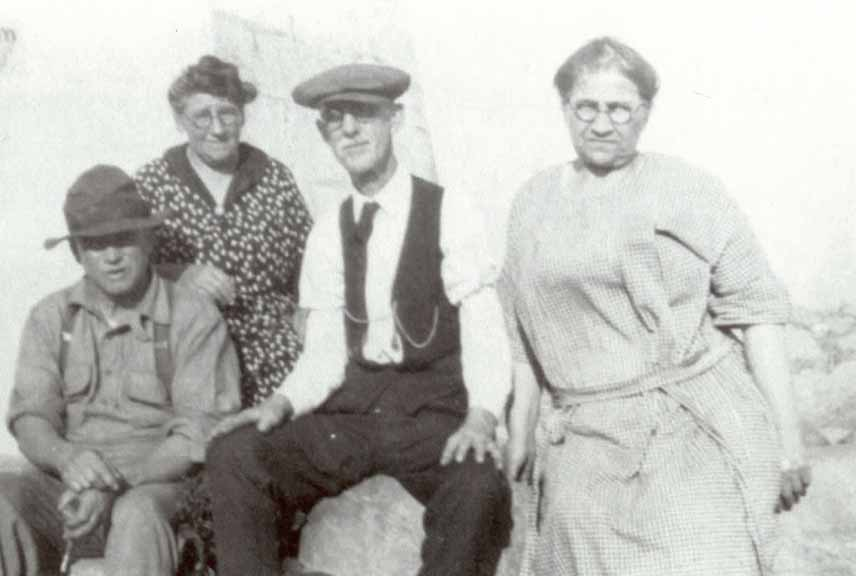
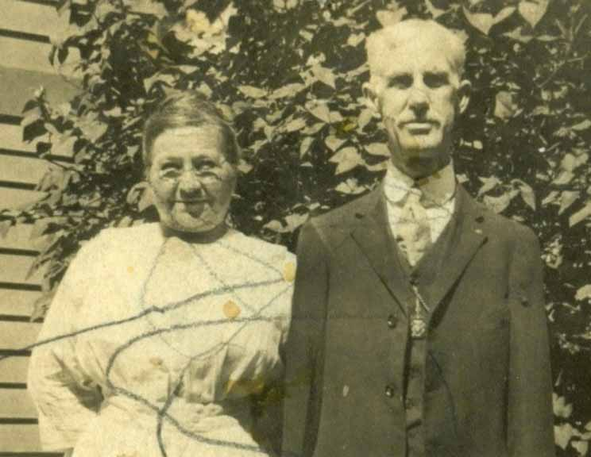
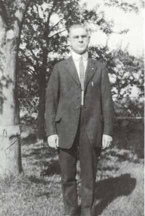
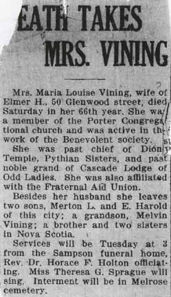
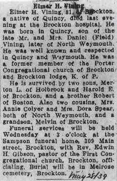
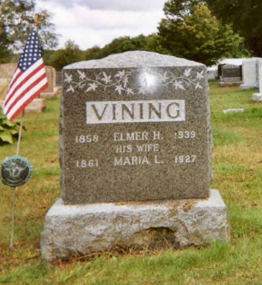
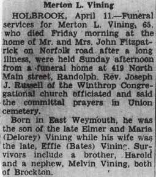

Family Data
left to right: husband and wife Lewis Melvin Foye and Maude Frances (Pittsley) Foye, and husband and wife Elmer Howard Vining and Mariah Louise (DesLauriers) Vining. (Elmer Harold Vining, a son of Elmer and Mariah, married Bernice Marguerite Foye, a daughter of Lewis and Maude).


Census Data
| 1900 | 1910 | 1920 | 1930 | 1930 | |
| Elmer Howard Vining | 42 | 51 | 63 | 72 [see note below] |
dead |
| Mariah Louise (DesLauriers) Vining | 39 | 49 | 58 | dead | |
| Merton Leon Vining | 15 | [illegible] | married? and living in separate household | ||
| Elmer Harold Vining | 8 | [illegible] | 28 | married (and living in separate household?) |


Death Data
obituary for Mariah Louise (DesLauriers) Vining:


